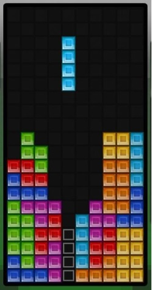

Trong trò chơi Tetris, người chơi sẽ đặt một số viên gạch vào một bảng hình chữ nhật gồm 20 dòng và 10 cột. Khi tất cả các ô của một dòng nào đó đã được điền đủ gạch, dòng đó sẽ được cắt và người chơi được thưởng 1 điểm.
Nam đang chơi một ván lở dở. Trong bảng đã có sẵn một vài viên gạch. Viên gạch tiếp theo sẽ là thanh chữ nhật kích thước 1x4. Thanh chữ nhật có thể được xoay thành đứng hay nằm. Thanh chữ nhật xuất hiện ở dòng đầu tiên của bảng và liên tục đi xuống. Trong quá trình đi xuống, thanh chữ nhật có thể được di chuyển qua trái, qua phải, nhưng không được đi ra khỏi bảng, dù chỉ một ô. Thanh chữ nhật sẽ dừng lại khi bị chặn bởi một viên gạch có sẵn hay khi đã đến dòng cuối của bảng. Khi thanh chữ nhật dừng lại, nếu dòng nào có đủ gạch thì sẽ được cắt.
Bạn hãy giúp Nam cắt nhiều gạch nhất có thể nhé.
Dữ liệu nhập:
- Gồm 01 dòng có 10 số nguyên hi (1 ≤ i ≤ 10; 0 ≤ hi ≤ 16) mỗi số là chiều cao của các cột trong bảng từ trái sang phải. Nói cách khác, hi ô dưới cùng của cột i đã có gạch.
- Đề bài đảm bảo có ít nhất một giá trị hi = 0, nghĩa là không có dòng nào tự động cắt.
Dữ liệu xuất:
- Một số nguyên là số dòng nhiều nhất có thể được cắt